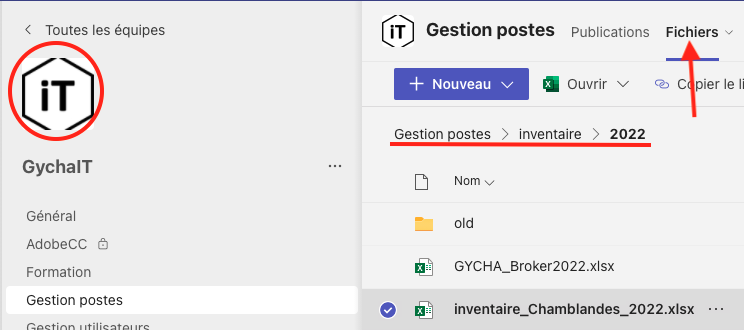
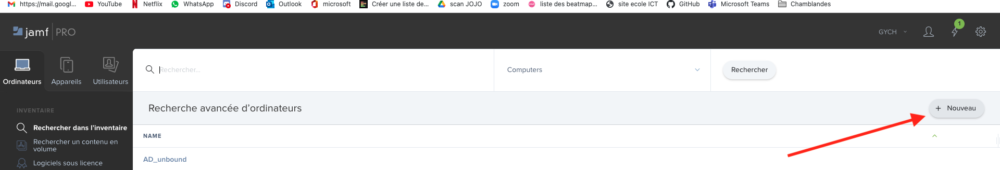
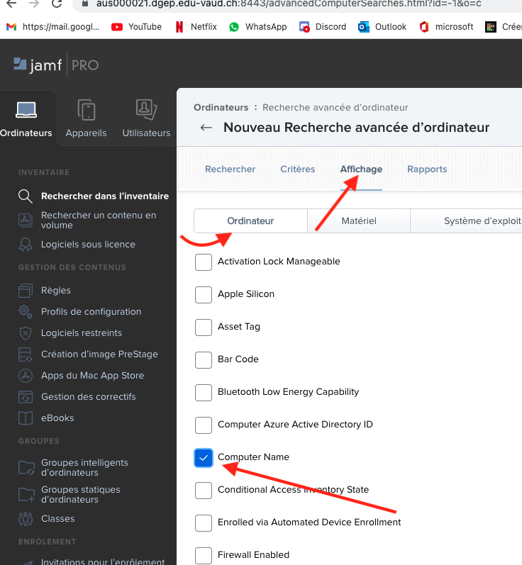
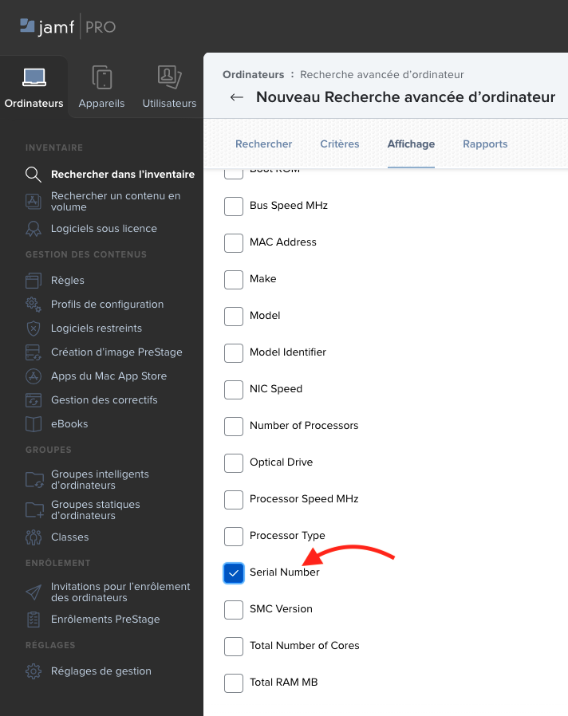

Section Programmation
Contenu
Section Programmation¶
Dans cette section vous pourrez retrouver les explication ansi que les script réaliser (néhister pas a en rajouter si vous en faite un).
Script compare inventory file¶
Marche a suivre pour récupérer le fichier sur teams¶
Pour pouvoir éxécuter le script il faut d’abord que vous téléchargiez 2 fichier a comparrer. Il y a un des deux fichier qui se trouve dans un dossier du nom de “inventaire” sur un des canal du teams de l’équipe. Je vous ai mis a disposition un screen pour vous aidez a trouver son emplacement.

{kind=link}
Marche a suivre pour récupérer le fichier sur jamf¶
Tout d’abord il faut vous rendre sur jamf. Ensuite aller sur ordinateur en haut a droite et cliquer sur “+ Nouveau”, comme indiqué sur l’image du si-dessous.

{kind=link}
Une fois que vous avez cliquer sur le bouton “+ Nouveau” cette fenêtre devrais s’ouvrire. Comme vous pouvez le voir vous êtes dans l’onglet Ordinateur sous la partie Affichage, mais il y en a plein d’autre. Comment par exemple Matériel que nous verron juste après. Bref une fois que vous êtes arriver jusq’ici il faut cocher “Computer Name”.

{kind=link}
Maintenant il faut trouver et selectionner le numéro de série. Pour ce faire il faut ce rendre dans l’onglet “matériel”. Attention vous ne le verrez pas tout de suite il faudra d’abord descendre (scroller) pour pouvoir ensuite selectionner “serial Number”

{kind=link}
Une fois que vous avez selectionner vos deux catégorie si je puis dire, il faut télécharger le rapport. Pour se faire aller dans la partie non pas affichage mais “Rapport”. Ensuite séléctionner le bon format donc fichier .csv séparer par des virgules. Et ce que nous voulons c’est le numéro de série et le nom des ordinateur donc il faut séléctionner “ordinateur”.